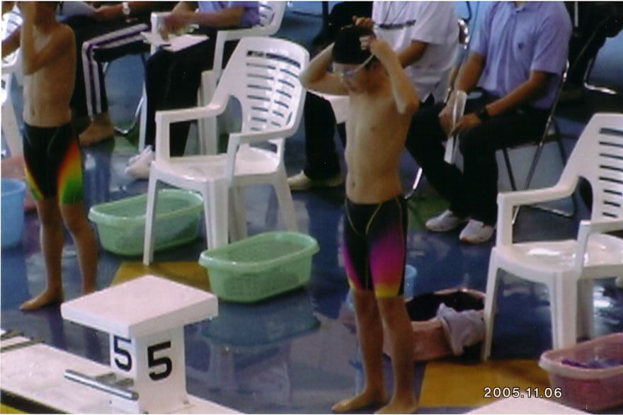
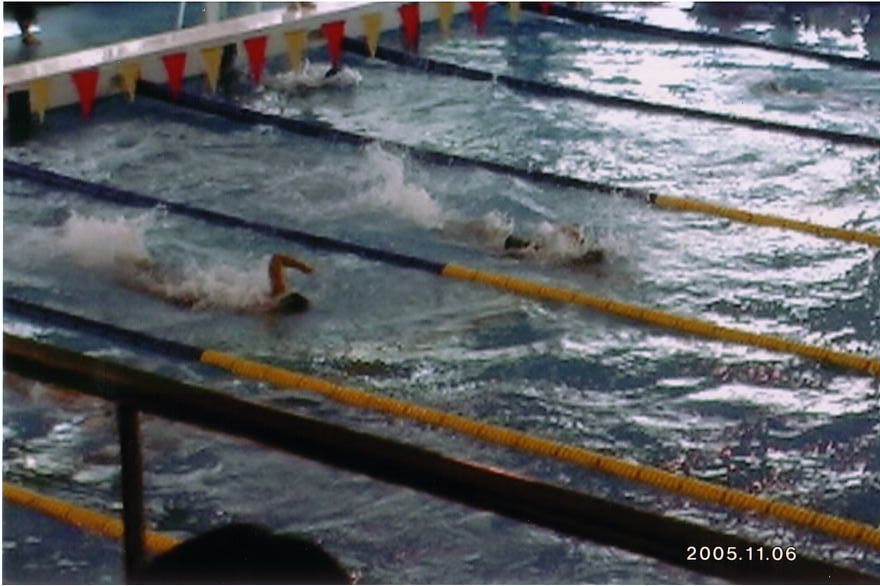
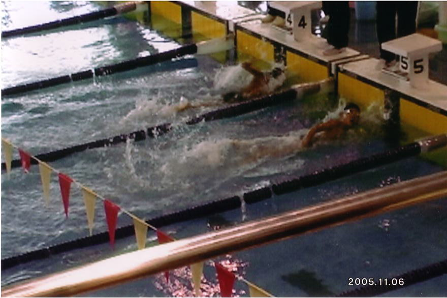
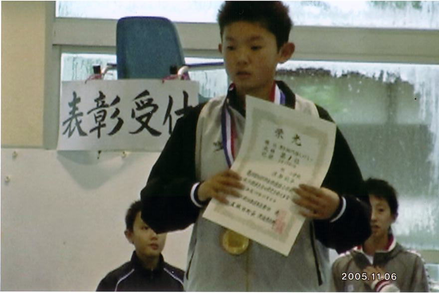

力泳する秋平くん
ＮＨＫ杯水泳大会
（Nov.'05 in Akita)
100メートル個人メドレーで優勝
|  |
５コースが秋平くん。４コースにはライバル。 |
|  |
最後のターン（75メートル）では水を空けられている。手前が秋平くん。 |
|  |
追い込み成って、タッチの差で優勝。 |
|  |
賞状を手にする秋平くん。「第１位」の文字が見える。 |
◎ 写真はビデオからの複写だそうです。
もどる（このページの上に）
左上のブラウザで「戻る」と、もとの作文のところにもどります。